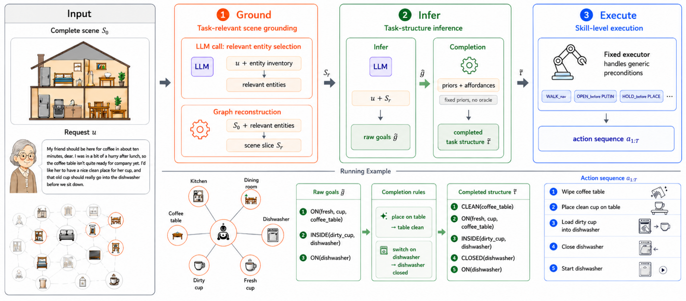
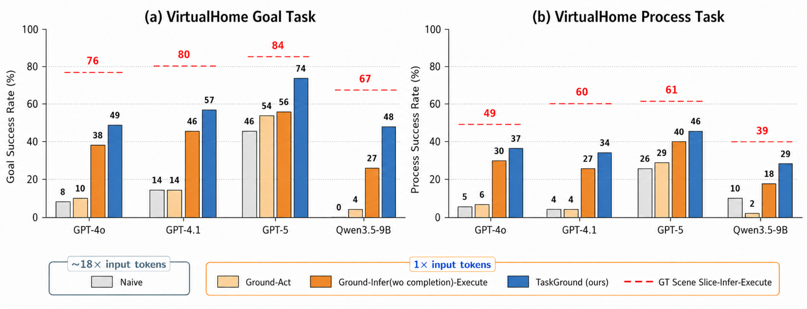

In real homes, people don't hand a robot a tidy goal list — they speak in situations. A request is grounded in the current scene and leaves the relevant objects, intended conditions, and ordering implicit. The agent must first figure out what to plan for.
在真实的家庭场景中，人们并不会递给机器人一份整洁的目标清单 — 他们是在具体情境中说话。请求扎根于当前场景， 相关物体、预期条件与执行顺序都被默认省略。 智能体必须先弄清楚究竟要为什么而规划。
“The storm is getting worse, and rain is coming into the office. My grandson is calling soon. Can you get my cup and the small table ready in there?”
“暴风雨越来越大，雨都飘进办公室里了。 我孙子马上要打电话过来，你能在那间屋子里，把我的杯子和小桌子都准备好吗？”
None of this is stated in the words alone. Before any action, the agent must infer an intermediate executable task structure from the complete scene and the situated request. We call this setting full-scene household reasoning — and it is what TaskGround is built to solve.
这些都没有写在字面上。在采取任何行动之前，智能体必须先从完整场景与情境化请求中， 推断出一个中间层的可执行任务结构。我们把这一设定称为 全场景家庭推理 — 这正是 TaskGround 所要解决的问题。
In real home deployments, household agents must often act from a complete household scene and a situated household request, rather than from a clean task specification. Such requests require an agent to identify task-relevant entities, recover intended task conditions, and resolve ordering constraints from surrounding scene context. We formalize this as full-scene household reasoning: given a complete scene and a situated request, the agent must infer executable task structure before producing a grounded skill-level action sequence.
This setting is hard because complete scenes contain substantial task-irrelevant information, making direct complete-scene prompting inefficient and error-prone — and privacy and local-compute constraints favor compact open-weight models with limited long-context reasoning. We propose TaskGround, a training-free and model-agnostic Ground–Infer–Execute framework that grounds complete scenes into compact task-relevant scene slices, infers and completes executable task structure, and compiles it into grounded skill-level actions. On FullHome, a human-validated suite of 400 tasks, TaskGround improves success rates by large margins across proprietary and open-weight models, makes Qwen3.5-9B competitive with GPT-5 while cutting input-token cost by up to 18×, and identifies executable task-structure inference as a central bottleneck.
A complete home has many rooms, objects, states and relations — while the request leaves goals and ordering implicit. Three forces make naive complete-scene prompting impractical.
Complete scenes are dominated by irrelevant objects and relations, so feeding the whole scene to an LLM is costly and error-prone.
Detailed household state reveals personal spaces and routines, making it undesirable to send complete-scene inputs to frontier proprietary models.
On-device deployment favors compact open-weight models that are harder pressed to reason over long, cluttered inputs.

A single LLM call selects task-relevant entities from the complete scene S0; a compact scene slice Sr is then reconstructed around them, cutting downstream input cost.
Over the slice, the model infers raw goal predicates ĝ, then completes them into a consistent task structure τ̃ using household priors and process-critical subgoals — no oracle needed.
A fixed, task-agnostic executor resolves generic preconditions and compiles the completed structure into a grounded action sequence a1:T.
Goal SR and Process SR (%) on VirtualHome and BEHAVIOR. Cells shaded pink exceed GPT-5 Naive, the frontier direct-prompting reference per column; (+Δ) is TaskGround's gain over the same model's Naive result; bold marks the best in each group.
| Model | Method | VirtualHome | BEHAVIOR | ||
|---|---|---|---|---|---|
| Goal SR | Process SR | Goal SR | Process SR | ||
| Proprietary models | |||||
| GPT-4o | Naive | 8.0 | 5.0 | 32.3 | 23.3 |
| TaskGround | 49.0(+41.0) | 37.0(+32.0) | 52.3(+20.0) | 35.5(+12.2) | |
| GPT-4.1 | Naive | 14.0 | 4.0 | 32.3 | 17.1 |
| TaskGround | 57.0(+43.0) | 34.0(+30.0) | 64.6(+32.3) | 45.7(+28.6) | |
| Gemini-2.5-Flash | Naive | 0.5 | 2.0 | 9.2 | 5.7 |
| TaskGround | 48.5(+48.0) | 19.0(+17.0) | 38.5(+29.3) | 37.1(+31.4) | |
| GPT-5 | Naive | 45.5 | 26.0 | 46.2 | 31.4 |
| TaskGround | 73.5(+28.0) | 46.0(+20.0) | 64.6(+18.4) | 51.4(+20.0) | |
| Open-weight models | |||||
| DeepSeek-V4-Flash | Naive | 28.5 | 15.0 | 27.7 | 25.7 |
| TaskGround | 63.0(+34.5) | 36.0(+21.0) | 47.7(+20.0) | 42.9(+17.2) | |
| MiMo-V2-Flash | Naive | 5.0 | 1.0 | 10.8 | 11.4 |
| TaskGround | 43.5(+38.5) | 23.0(+22.0) | 43.1(+32.3) | 40.0(+28.6) | |
| Gemma-3-12B | Naive | 0.0 | 1.0 | 0.0 | 5.7 |
| TaskGround | 37.0(+37.0) | 19.0(+18.0) | 29.2(+29.2) | 34.3(+28.6) | |
| Qwen3.5-9B | Naive | 0.0 | 10.0 | 1.5 | 14.3 |
| TaskGround | 47.5(+47.5) | 29.0(+19.0) | 43.1(+41.6) | 40.0(+25.7) | |

@article{feng2026taskground,
title = {TaskGround: Structured Executable Task Inference for Full-Scene Household Reasoning},
author = {Feng, ZhiYuan and Deng, Yu and An, Ruichuan and Liu, Zhenhua and Li, Qixiu
and Wu, Keming and Du, Zhiying and Wang, Weijie and Wang, Haoxiao and Chen, Shuang
and Xu, Sicheng and Liang, Yaobo and Yang, Jiaolong and Guo, Baining},
journal = {arXiv preprint arXiv:2605.18109},
year = {2026}
}